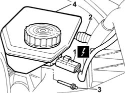
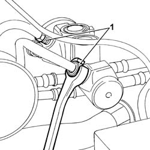
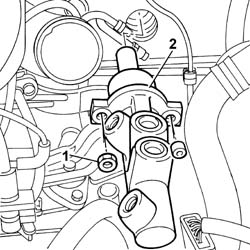

3330C10 MASTER CYLINDER (PUMP) - R + R
- Path
- Procedures > 33 BRAKES > 3330 HYDRAULIC BRAKE SYSTEM > 3330C BRAKE PUMP, RESERVOIR AND LOAD PROPORTIONING VALVE > 3330C10 MASTER CYLINDER (PUMP) - R + R
- Kind
- repair procedure (removal / refitting; the operation number is the code)
- Applies to
- all engines; all production periods
- Interactive page
- https://sloeber94.github.io/elrnDB-fUlss/en/#/179007305
Applies to: all engines; all production periods
 Removing
Removing
 Refitting
RefittingSee
Op. 5530B56 BATTERY DRIP TRAY COVER - R.R.
Disconnect the negative battery terminal.
Position the vehicle on a lift.
Remove the protective cap from the bleed valve on one of the front brake calipers.
Connect the recovery device (pipe and reservoir) to the brake caliper bleed valve.
Operate the brake pedal until the brake/clutch reservoir is drained.
See
Op. 1048A10 AIR FILTER ASSEMBLY - R.R.
See
Applies to: all engines; all production periods
1. Disconnect the electrical connection for the brake/clutch fluid level sensor.
2. Disconnect the fluid supply pipe from the reservoir to the clutch pump.
3. Remove the pin fastening the brake/clutch fluid reservoir.
4. Remove the brake/clutch fluid reservoir.

Applies to: all engines; all production periods
1. Undo the connectors for the rigid fluid pipes from the master cylinder.

Applies to: all engines; all production periods
1. Undo the nuts fixing the master cylinder to the brake servo.
2. Remove the master cylinder (pump).

Applies to: all engines; all production periods
Refitting
RemovingFit the master cylinder (pump) in the housing and tighten the fixing nuts.
Value daNm | Fastening | Component | dia | |
|---|---|---|---|---|
. | 2.0 | Nuts | CLUTCH FLUID MASTER CYLINDER |
Connect the rigid pipes and tighten the connectors to the recommended torque.
Component | Fastening | dia | Value daNm |
|---|---|---|---|
RIGID BRAKE FLUID PIPES | Connectors | 1,5 |
Connect the flexible pipes for the brake/clutch fluid reservoir.
Fit the brake/clutch fluid reservoir on the master cylinder and fasten the pin.
Connect the flexible fluid supply pipe to the clutch pump.
Connect the electrical connection for the brake fluid level sensor.
See
Applies to: all engines; all production periods
See
Applies to: all engines; all production periods
See
Op. 1048A10 AIR FILTER ASSEMBLY - R.R.
Remove the vehicle from the lift.
Connect the negative battery terminal.
See
Op. 5530B56 BATTERY DRIP TRAY COVER - R.R.
Test the operation of the braking system.